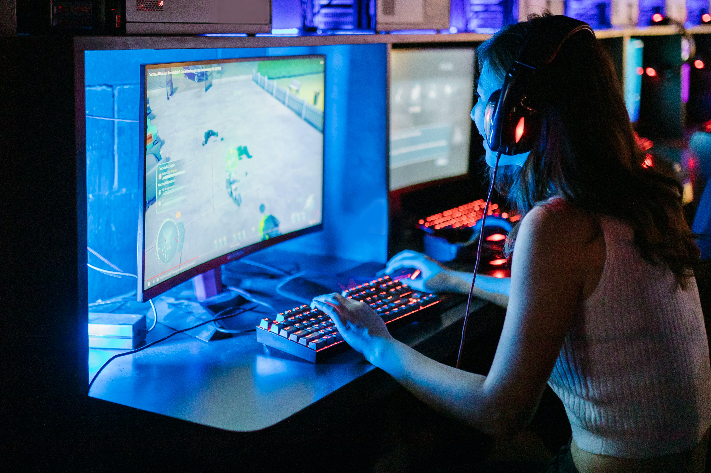

Cómo armar tu primera PC gamer

En la lista anterior, los componenetes realmente necesarios son los ubicados del 1 al 5, ya que son los que van a permitir el funcionamiento básico de nuestra pc y, dependiendo de la calidad de estos va a estar marcado el rendimiento en todos los aspectos, no solo en gaming de nuestro PC. Por otro lado la lista de importancia esta marcada según su funcionalidad e importancia para el funcionamiento de la computadora y en los cuales uno debería centrarse a la hora de armar una PC, sin embargo si en el futuro se desea realizar una actualización de los componentes, hay que centrarse en qué aspectos se necesitan mejorar, lo cual, veremos más adelante.

Recomendación: Cuando se compran memorias RAM, lo mejor es comprarlas de a pares, es decir, en lugar de comprar una sola de 8 Gb de memoria, mejor es comprar 2 de 4 Gb ya que las tareas se dividen entre ambas y resulta en un mejor multitasking de tu pc.

Para finalizar, a menor que desees armar tu pc para juego profesional, lo mejor es optar por periféricos (teclado y mouse) más económicos en un principio, invertir tal vez en un mejor headset, lo que te va a permitir jugar online con otros jugadores y amigos, ya que al principio o hasta que se alcance un cierto nivel competitivo, los periféricos "gamer" son solamente estéticos.
Una unidad central de procesamiento, o CPU, es una pieza de hardware que permite que tu computadora interactúe con todas las aplicaciones y programas instalados. Una CPU interpreta las instrucciones del programa y crea la señal de pantalla con la que interactúas cuando utilizas una computadora.
Ver precios
La placa base es esa en la que se conectan todos los componentes internos del ordenador, desde el procesador hasta los discos duros, la memoria RAM o la tarjeta gráfica. Cada uno de estos componentes tiene su propia ranura para que puedas conectarla.
ver preciosUna fuente de alimentación, por lo tanto, es un dispositivo que se encarga proporcionar la corriente justa y necesaria a un equipo electrónico. De esta manera, una fuente de alimentación modular mejora el flujo de aire del PC ya que solo cuenta con los cables que se necesitan.
ver precios